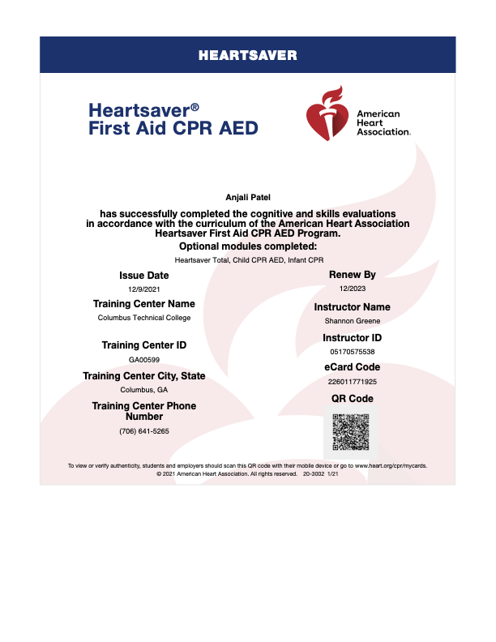
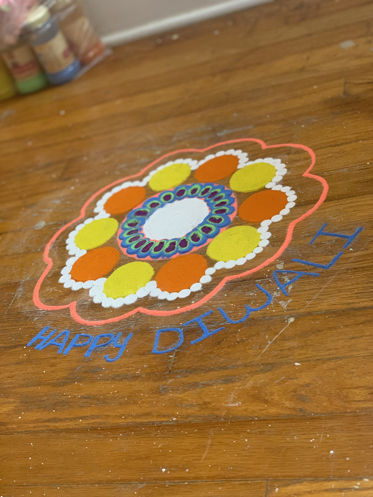

In 2019, I received this certificate upon passing an exam on the program called Ucertify, for my Computer Architecture course. I know the essentials of a computer and pc.
CPR Certified

In 2021, I completed my CPR course which taught me how perform cpr on an adult or child with an AED, and also perform cpr on an infant. Upon finishing the course I earned my CPR Card.
Drawing Henna Tattoos
I learned this skill of drawing beautiful henna from my mom. I am not very skilled in drawing on paper with pencil, but when it comes to mandalas or these amazing designs I can draw them.
Creativity

I can draw designs out of my imagination and this colorful rangoli I made is also a part of my creativity. During the Hindu Diwali Festival also known as the Festivals of Light, we make such colorful rangolis in our houses because it brings us joy. The significance of this festival is to bringing joy and happiness to yourself and loved ones.
Cooking
This image shows a Mexican food called Enchiladas that was cooked by my roommate and me. I can cook many items from the Mexican food list, including enchiladas, burritos, quesadillas, and chili. Aside from Mexican, I can cook Indian food too. I am a vegetarian, so I know how to cook many of the Indian Cuisines. This includes Panner Tikka Masala curry from Punjabi Cuisine; street foods from Delhi Cuisine; homemade food from Gujarati Cuisine; Dosa and Idli Sambhar from South Indian Cuisine; and Samosa and Pani Puri from North Indian Cuisine.
Driving
Click on the video to play and pause the video. To play this video your browser needs to support HTML5.
I also know how to drive a car. My father had a huge contribution in teaching me how to drive starting with his dodge van which made it easier for me to drive an even smaller car. I have a Toyota Corolla 2022. The video above shows me driving my car.
Multilingual
Click on the play/pause button above to play the audio clip. To play this audio clip, your browser needs to support HTML5.
I am multilingual, because I know how to speak English, Hindi, Gujarati, and a little Spanish. The audio clip above is a recording of me speaking these languages.